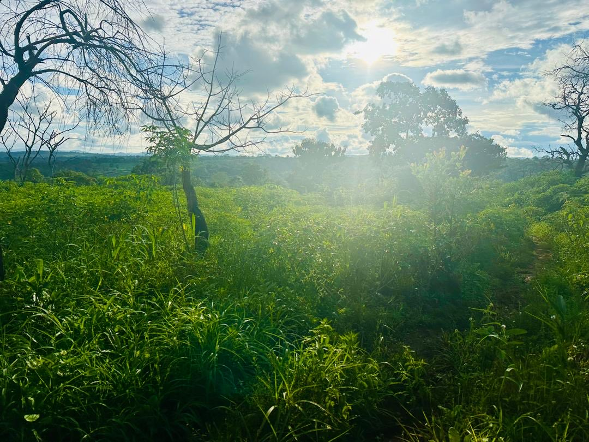
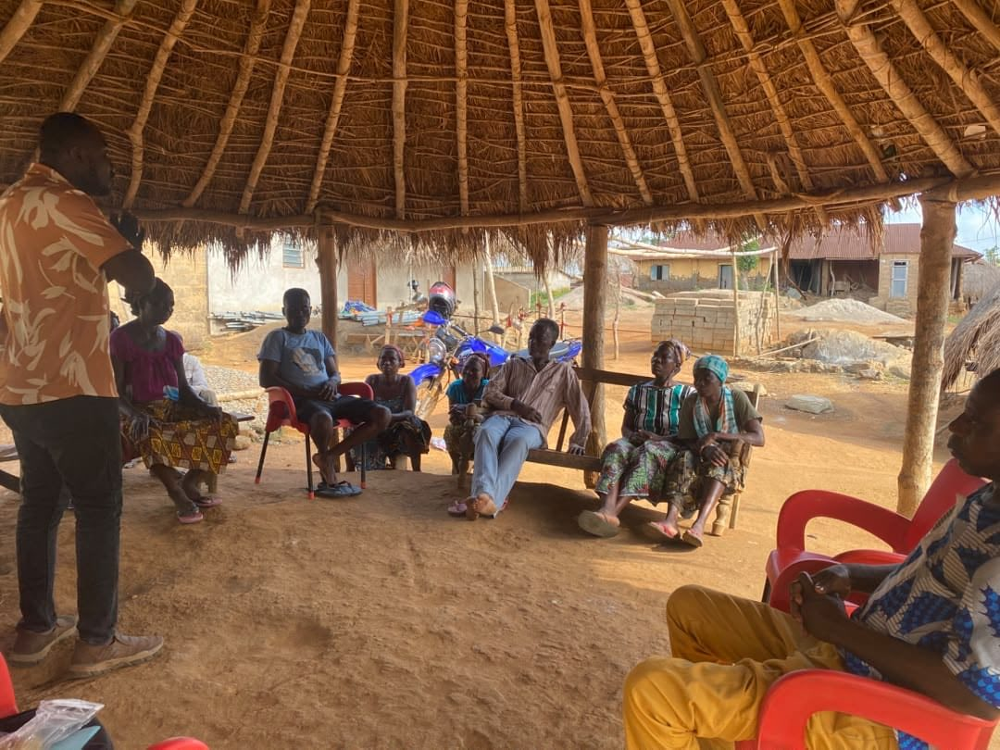

Agro-industrie
De la parcelle au conteneur : nous structurons des filières complètes, de la production à l'export.
- Contrats avec les acheteurs
- Certification et qualité
- Financement des campagnes
- Unités de transformation
Depuis Lomé, J2A Consulting relie porteurs de projets, collectivités et investisseurs, et accompagne chaque projet de l'étude jusqu'à l'implantation.
Projets phasés, montages juridiques et financiers, modèles au standard des financeurs.
Acheteurs, investisseurs, bailleurs et partenaires locaux, réunis autour d'un même projet.
Un réseau opérationnel en Afrique de l'Ouest, relié à l'Europe, au Maghreb, au Golfe, au Canada, à l'Asie et à l'Australie.
Lomé au centre, onze destinations. Chacune correspond à un type de partenaires que nous mobilisons pour vos projets.
Un bon projet ne suffit pas. Entre l'idée et le financement, il manque presque toujours un dossier.
Le dossier au standard des banques et des fonds, la structure juridique claire, le plan par phases, les partenaires au bon endroit : c'est ce qui sépare un projet solide d'un projet financé.
C'est ce chaînon que nous construisons, pour les entreprises, pour les investisseurs étrangers qui entrent sur le marché et pour les collectivités qui doivent transformer leurs besoins en projets finançables.

Quatre étapes, un seul interlocuteur, du premier diagnostic à l'installation sur le terrain.
Nous validons le projet avant d'engager des moyens.
Nous donnons au projet la forme qu'attendent les financeurs.
Nous préparons les dossiers et accompagnons la recherche de financement. La décision reste celle des financeurs.
Nous restons aux côtés du projet sur le terrain.
De la parcelle au conteneur : nous structurons des filières complètes, de la production à l'export.
Projets résidentiels et mixtes, de la faisabilité au dossier bancaire.
Nous aidons les communes à transformer leurs besoins en projets que les bailleurs peuvent financer.
Pour les entreprises étrangères qui veulent tester l'Afrique de l'Ouest avant de s'y installer.
Nous appliquons l'intelligence artificielle et les méthodes d'entrepreneuriat aux projets, avec des partenaires spécialisés.
Coopératives et filières agricoles
Les coopératives et les associations villageoises ont la terre et le savoir-faire. Il leur manque souvent un acheteur sous contrat, une organisation reconnue et un accès au financement. Nous faisons le lien, du diagnostic au suivi des campagnes.

Statut, foncier, gouvernance, volumes, comptes. Chaque coopérative reçoit une note A, B ou C : ce qui est finançable aujourd'hui, et ce qui reste à construire.
Mise en conformité avec l'Acte uniforme OHADA, gouvernance, comptabilité simple et formation des gérants.
Préparation à la certification bio de groupe et tenue du système de contrôle interne exigé par les organismes certificateurs.
Recherche d'acheteurs et contrats d'achat : volumes, qualité, prix plancher et primes.
Crédit de campagne adossé aux contrats, warrantage, garanties et subventions. Les fonds sont versés directement aux coopératives.
Des rapports réguliers sur les livraisons, les stocks et les remboursements, pour que chacun sache où en est la campagne.
Un débouché sûr et un accès au crédit.
Des volumes réguliers, traçables et certifiés.
Des dossiers solides et un relais sur le terrain.
Des pôles agricoles qui créent des emplois pour les jeunes.
Notre règle : nous ne gérons jamais les fonds. Les financements vont aux coopératives, les contrats sont signés entre les parties, et notre rémunération est connue de tous.
Présenter une coopérative ou une filièreUne filière agro-industrielle d'export, au Togo
Du foncier et un acheteur européen intéressé, mais ni plan de financement, ni certification, ni organisation de production. Voici où en est le dossier.
D'autres dossiers en immobilier, auprès de collectivités et en entrée sur le marché sont présentés sur demande, sous accord de confidentialité.
Recevoir une présentation détailléeSe développer en Afrique de l'Ouest sans ouvrir tout de suite une filiale. Présence commerciale, connaissance du marché, opportunités qualifiées et représentation locale, activées par étapes selon les résultats.
Pour les gouvernements, fonds souverains, family offices et groupes internationaux, nous montons aussi des mandats sur mesure.
« Entrer sur un nouveau marché ne devrait jamais commencer par l'ouverture d'un bureau. »

Yaovi Kokodoko structure des projets et des financements entre l'Afrique de l'Ouest, l'Europe, le Golfe, le Québec et l'Asie. Il travaille avec des entreprises, des investisseurs et des collectivités, en agro-industrie, en immobilier et en développement institutionnel.
Il est cofondateur de Growing Beyond Vision, gérant d'Ipomoea Africa et président de l'Association Togolaise de la Franchise.
« Mon métier, c'est de rendre un projet lisible pour ceux qui doivent le financer, sans lui faire perdre ce qui le rend juste pour le terrain. »
J2A est au centre d'un ensemble de projets et de partenaires qui se renforcent les uns les autres.
Production et export agro-industriels au Togo, construits par phases.
Architecture d'investissement pour l'Afrique, depuis Sharjah.
La franchise comme levier de développement des entreprises au Togo.
Cabinet de transformation B2B, du lean au numérique, pour l'industrie, les infrastructures et la chaîne logistique.
Voir le sitePlateforme d'entrepreneuriat fondée sur l'IA pour les universités, les gouvernements et les incubateurs. Avec Lean Hub Asia, J2A en porte un projet de déploiement en Afrique de l'Ouest francophone.
Voir le sitePlateforme de planification intégrée par l'IA et les jumeaux numériques. J2A accompagne son développement en Afrique de l'Ouest.
Voir le siteCentrale entrepreneuriale et des filières agricoles : foncier agricole et programmes de production au Togo.
Premier échange offert
Un premier échange en visioconférence ou à Lomé, sans engagement. Décrivez votre projet en deux minutes : nous revenons vers vous sous 48 heures ouvrées pour fixer le rendez-vous.
Réserver mon premier échangePour bien préparer l'échange, nous vous demandons le type de projet, le pays et son stade d'avancement : idée, étude ou recherche de financement.